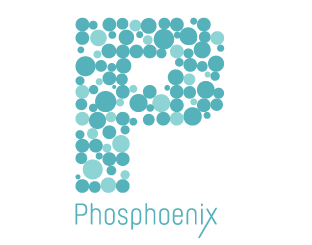
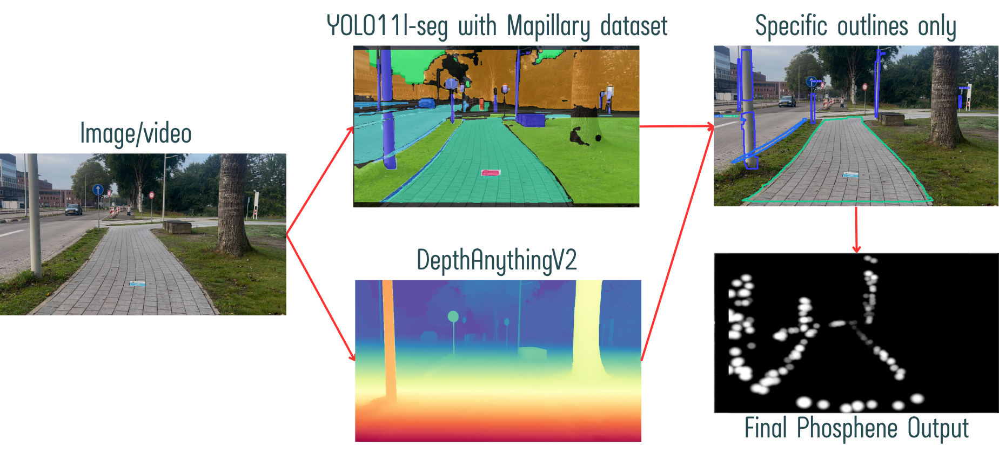

Start with live visual input from the user's surroundings.

Joint Interdisciplinary Project · TU Delft · Phosphoenix
Phosphoenix
AI-based phosphene visualization for navigation support in visual prosthesis. We explored how live camera images can be simplified into a small set of meaningful visual cues that could support safer outdoor navigation for people with severe vision loss.

JIP
TU Delft Joint Interdisciplinary Project with an external company partner
5 disciplines
Engineering, robotics, computer science, data/AI and physics-oriented expertise
9.0 / 10
Final project grade
What is JIP?
An interdisciplinary industry project
The Joint Interdisciplinary Project (JIP) is a TU Delft project in which students from different technical backgrounds work together with an external partner on a real engineering challenge.
Our team worked with Phosphoenix and combined expertise from robotics, computer science, data science and AI, physics, mechanical engineering and related technical disciplines. The project required us to combine research, software development, system design and user-oriented decision making.
The project
Making limited artificial vision useful for navigation
A phosphene is a perceived point or pattern of light created by direct stimulation of the visual system. A future visual prosthesis can use many such points to communicate visual information, but the available resolution is still extremely limited compared with natural vision.
The central challenge was therefore not to recreate a complete camera image, but to decide which parts of a scene are most useful for navigation. The project focused on extracting relevant outdoor objects, surfaces and spatial information and converting those into a simplified phosphene view.
Our approach
From a camera frame to navigation-relevant information
Detect navigation-relevant objects and surfaces using a YOLO11 segmentation model.
Use depth information and class relevance to reduce clutter and emphasize useful scene elements.
Convert selected outlines and scene information into a simplified phosphene view.
What we did
Model selection, dataset development and real-time processing
Segmentation models
- Compared multiple segmentation approaches and model architectures.
- Evaluated the trade-off between segmentation quality and inference speed.
- Selected YOLO11l-seg as a suitable base for navigation-focused segmentation.
Custom dataset
- Adapted the Mapillary dataset toward outdoor navigation.
- Modified and reorganized classes to focus on information that matters for safe mobility.
- Trained and fine-tuned a custom YOLO segmentation model on the modified dataset.
Depth information
- Compared different approaches for estimating environmental depth.
- Used DepthAnythingV2 as the depth-estimation component in the final concept.
- Explored class- and distance-based prioritization to reduce visual clutter.
Phosphene output
- Converted selected scene information into simplified visual outlines.
- Used phosphene simulation to inspect how the processed scene could be represented.
- Developed the main building blocks of a navigation-oriented real-time perception pipeline.
My contribution
Segmentation model evaluation and custom model development
My main focus was the computer-vision side of the project. Together with another team member, I coordinated the comparison and evaluation of different pretrained segmentation models and datasets.
I then worked on adapting the dataset toward navigation, training and fine-tuning the custom YOLO model, and evaluating how the resulting segmentation could be used to select relevant visual information for the phosphene representation.
Beyond my own work package, I contributed to the broader system decisions, testing and integration discussions within the interdisciplinary team.
Confidentiality: this portfolio only shows high-level project
information and an approved presentation figure. Internal implementation details,
code and project data are intentionally omitted.
Technology
Python
YOLO11-seg
Custom Model Training
Mapillary
DepthAnythingV2
Computer Vision
Instance Segmentation
Image Processing
Dataset Preparation
Phosphene Simulation